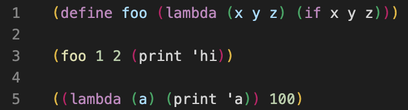

Homework 9: Programs as Data, Macros
Due by 11:59pm on Monday, December 2
Instructions
Download hw09.zip. Inside the archive, you will find a file called
hw09.scm, along with a copy of the ok autograder.
Submission: When you are done, submit the assignment by uploading all code files you've edited to Gradescope. You may submit more than once before the deadline; only the final submission will be scored. Check that you have successfully submitted your code on Gradescope. See Lab 0 for more instructions on submitting assignments.
Using Ok: If you have any questions about using Ok, please refer to this guide.
Readings: You might find the following references useful:
Grading: Homework is graded based on correctness. Each incorrect problem will decrease the total score by one point. This homework is out of 2 points.
The 61A Scheme interpreter is included in each Scheme assignment. To start it,
type python3 scheme in a terminal. To load a Scheme file called f.scm, type python3 scheme -i f.scm. To exit the Scheme interpreter, type
(exit).
Scheme Editor
All Scheme assignments include a web-based editor that makes it easy to run ok
tests and visualize environments. Type python3 editor in a terminal, and the
editor will open in a browser window (at http://127.0.0.1:31415/). Whatever
changes you make here will also save to the original file on your computer!
To stop running the editor and return to the command line, type Ctrl-C in the
terminal where you started the editor.
The Run button loads the current assignment's .scm file and opens a Scheme
interpreter, allowing you to try evaluating different Scheme expressions.
The Test button runs all ok tests for the assignment. Click View Case for a
failed test, then click Debug to step through its evaluation.
Recommended VS Code Extensions
If you choose to use VS Code as your text editor (instead of the web-based editor), install the vscode-scheme extension so that parentheses are highlighted.
Before:

After:
In addition, the 61a-bot (installation instructions) VS Code extension is available for Scheme homeworks. The bot is also integrated into ok.
Visualizing Scheme Lists
If you would like some support with visualizing lists in Scheme, please navigate
to code.cs61a.org, select Start Scheme Interpreter,
and call (autodraw).
Required Questions
Getting Started Videos
These videos may provide some helpful direction for tackling the coding problems on this assignment.
To see these videos, you should be logged into your berkeley.edu email.
Programs as Data: Chef Curry
Recall that currying transforms a multiple argument function into a series of higher-order, one argument functions. For a review of how this looks in Python, please see the following previous lecture video on Function Currying. In the next set of questions, you will be creating functions that can automatically curry a function of any length using the notion that programs are data!
Q1: Cooking Curry
Implement the function curry-cook, which takes in a Scheme list formals and a quoted expression body. curry-cook should generate a program as a list that is a curried version of a lambda function. The returned program should be a curried version of a lambda function with formal arguments equal to formals, and a function body equal to body. You may assume that all functions passed in will have more than 0 formals; otherwise, it would not be curry-able!
For example, if you wanted to curry the function (lambda (x y) (+ x y)), you would set formals equal to '(x y), the body equal to '(+ x y), and make a call to curry-cook: (curry-cook '(x y) '(+ x y)).
scm> (curry-cook '(a) 'a)
(lambda (a) a)
scm> (curry-cook '(x y) '(+ x y))
(lambda (x) (lambda (y) (+ x y)))(define (curry-cook formals body)
'YOUR-CODE-HERE
)Use Ok to test your code:
python3 ok -q curry-cookQ2: Consuming Curry
Implement the function curry-consume, which takes in a curried lambda function curry and applies the function to a list of arguments args. You may make the following assumptions:
- If
curryis ann-curried function, then there will be at mostnarguments inargs. - If there are 0 arguments (
argsis an empty list), then you may assume thatcurryhas been fully applied with relevant arguments; in this case,currynow contains a value representing the output of the lambda function. Return it.
Note that there can be fewer args than formals for the corresponding lambda function curry! In the case that there are fewer arguments, curry-consume should return a curried lambda function, which is the result of partially applying curry up to the number of args provdied. See the doctests below for a few examples.
scm> (define three-curry (lambda (x) (lambda (y) (lambda (z) (+ x (* y z)))) ))
three-curry
scm> (define eat-two (curry-consume three-curry '(1 2))) ; pass in only two arguments, return should be a one-arg lambda function!
eat-two
scm> eat-two
(lambda (z) (+ x (* y z)))
scm> (eat-two 3) ; pass in the last argument; 1 + (2 * 3)
7
scm> (curry-consume three-curry '(1 2 3)) ; all three arguments at once
7(define (curry-consume curry args)
'YOUR-CODE-HERE
)Use Ok to test your code:
python3 ok -q curry-consumeMacros
Q3: Switch to Cond
switch is a macro that takes in an expression expr and a list of pairs options, where the first element of each pair is some value and the second element is a single expression. switch evaluates the expression contained in the list of options that corresponds to the value that expr evaluates to.
scm> (switch (+ 1 1) ((1 (print 'a))
(2 (print 'b)) ; (print 'b) is evaluated because (+ 1 1) evaluates to 2
(3 (print 'c))))
bswitch uses another procedure called switch-to-cond in its implementation:
scm> (define-macro (switch expr options)
(switch-to-cond (list 'switch expr options))
)Your task is to define switch-to-cond, a procedure (not a macro) that takes in a quoted switch expression and converts it into a cond expression with the same behavior. An example is shown below.
scm> (switch-to-cond `(switch (+ 1 1) ((1 2) (2 4) (3 6))))
(cond ((equal? (+ 1 1) 1) 2) ((equal? (+ 1 1) 2) 4) ((equal? (+ 1 1) 3) 6))(define-macro (switch expr options) (switch-to-cond (list 'switch expr options)))
(define (switch-to-cond switch-expr)
(cons _________
(map
(lambda (option) (cons _______________ (cdr option)))
(car (cdr (cdr switch-expr))))))Use Ok to test your code:
python3 ok -q switch-to-condCheck Your Score Locally
You can locally check your score on each question of this assignment by running
python3 ok --scoreThis does NOT submit the assignment! When you are satisfied with your score, submit the assignment to Gradescope to receive credit for it.
Submit Assignment
Submit this assignment by uploading the .scm file to the appropriate Gradescope assignment. Lab 00 has detailed instructions.
Exam Practice
Homework assignments will also contain prior exam questions for you to try. These questions have no submission component; feel free to attempt them if you'd like some practice!
Macros
- Fall 2019 Final Q9: Macro Lens
- Summer 2019 Final Q10c: Slice
- Spring 2019 Final Q8: Macros